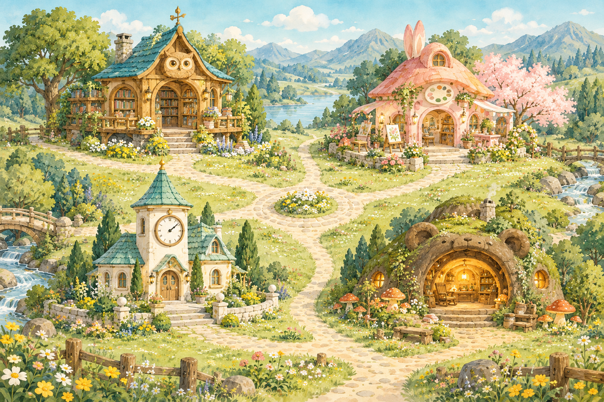
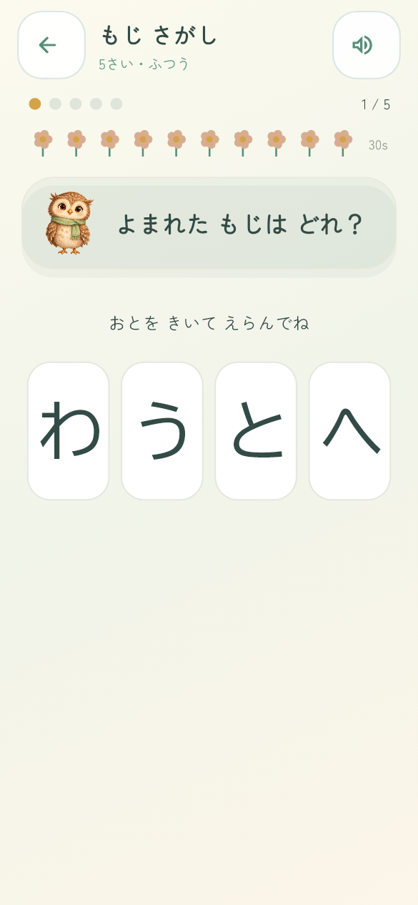
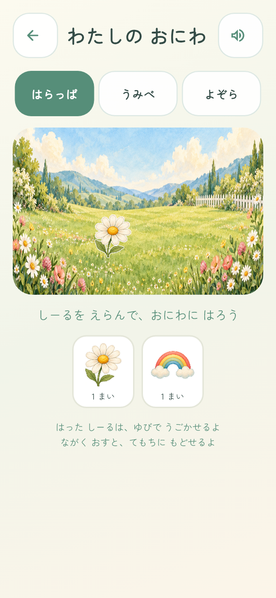
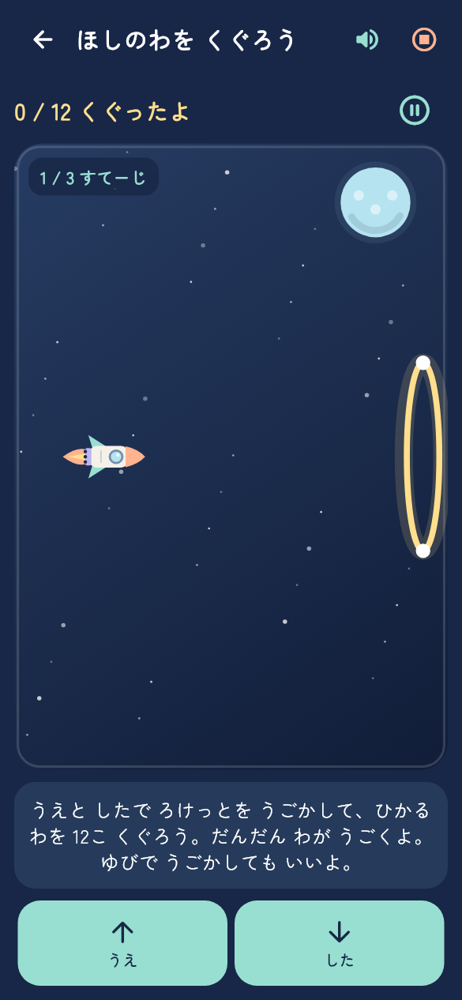
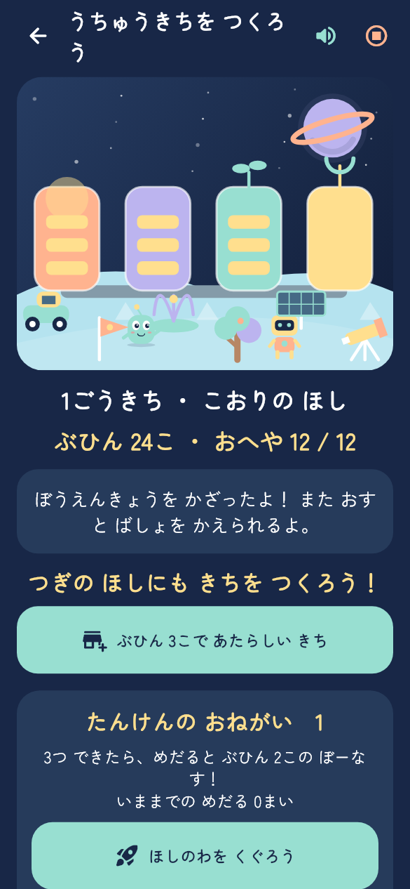

01 / ことば
ことばの としょかん
ひらがな・カタカナ・ABC。
音を聞いて、ことばに出会おう。
3〜6歳の、あそびとまなびに。
もじを見つけて、かたちをつくって。
どうぶつたちと過ごす時間が、
ちいさな発見でいっぱいに。
子どものペースで。おうちのひとと、いっしょに。

きょうは、なにしてあそぶ？PLAY & DISCOVER
ことばも、かずも、考えることも。
今日は気になる扉から。
何度でも、自分のペースで遊べます。
ひらがな・カタカナ・ABC。
音を聞いて、ことばに出会おう。
ぴったりはまる形は、どれ？
指を動かして、試してみよう。
朝から夜まで、毎日があそび。
時計や暮らしになじもう。
よく見て、覚えて、ひらめいて。
考える楽しさを見つけよう。
A LITTLE PEEK
無料で遊べる4つのあそびを、
実際のアプリ画面でご紹介。
※画像はアプリの紹介用画面です。このページではゲームは遊べません。

読み上げを聞いて、同じ文字をタッチ。
ひらがなと音を、遊びながらつなげます。

わたしだけの、LITTLE STEPS, LITTLE TREASURES
遊んでもらったシールを、おにわにぺたり。
集めた部品で、ひみつきちを少しずつ。
「もうひとつやってみよう」が、
自分だけのおにわや基地を育てていきます。
A WHOLE NEW ADVENTURE
自分のロケットで、星の輪をくぐって。
宇宙飛行士を迎えて、基地をつくって。
ちえのひろばから、もうひとつの冒険へ。


FOR PARENTS
お子さまのペースと、ご家庭のルールに。
遊びやすさを、保護者の方が整えられます。
1日の時間上限を設定。時間になったらおやすみ。無料でも購入後でも使えます。
3〜6歳のおすすめ問題と、手動の難しさ選び。読み上げの速さや音量も調整できます。
アカウント登録や広告はありません。学習記録を見ながら、お子さまの一歩を見守れます。
年齢別の出題は目安です。発達や学習効果を保証するものではありません。購入・復元にはGoogle Playとの通信を利用します。読み上げの通信は端末の音声エンジンと設定に依存します。
START SMALL
4つのあそびを無料で。気に入ったら、ひろばをもっと広く。
まずはおためし
¥0
もじさがし / すうじなぞり
ぴかぴか はみがき / 宇宙の輪くぐり
回数制限なし。保護者の時間上限は適用されます。
もっと広がる、まなびとあそび
¥980 税込・通常価格予定
26の知育ゲーム・宇宙探検・基地づくり。
広告なし。月額料金・自動更新なし。
購入は保護者の方が。実際の価格は購入時のストア表示をご確認ください。
現在は内部テスト段階です。Google Playでの一般配信開始後、このページでダウンロードをご案内します。
QUESTIONS & ANSWERS
3〜6歳の年齢別おすすめ問題を用意しています。年齢は目安です。お子さまの興味や様子に合わせ、保護者の方といっしょに難しさを選んでください。
ふだんの遊びはオフラインで利用できます。購入・復元・購入状態の確認にはGoogle Playとの通信が必要です。読み上げの利用可否や通信は端末の音声エンジンと設定にも依存します。
広告はありません。無料の4種類以外は、Google Playの1回限りの購入で全解放する構成です。月額料金・自動更新はなく、部品や通貨の販売もありません。実際の販売価格は購入時のストア表示に従います。
購入したGoogleアカウントでGoogle Playにログインし、保護者画面から購入を復元できます。学習記録やおにわは端末内に保存され、購入の復元では戻りません。別のアカウントやストアへの購入の移行は保証していません。
保護者の方から、orubisu.io3@gmail.com へご連絡ください。お子さまの本名や顔写真など、対応に不要な情報は送らないでください。
ちいさな「できた」が、はなひらく。
また、ひろばで会おう。